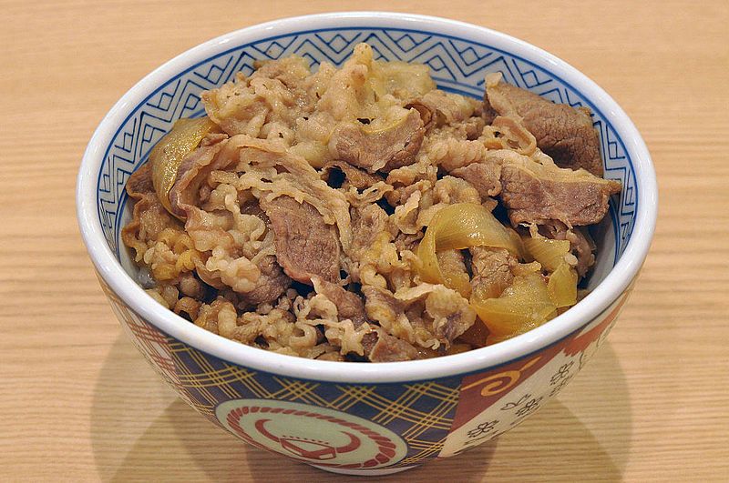

Gyu Don (牛丼)

Gyu Don (牛丼)
Gyu Don is a Japanese dish consisting of a bowl of rice topped with beef and onion
simmered in a mildly sweet sauce flavored with dashi (fish and seaweed stock), soy sauce and mirin (sweet rice wine)
Price: Large: $10.5 Regular: $8.5